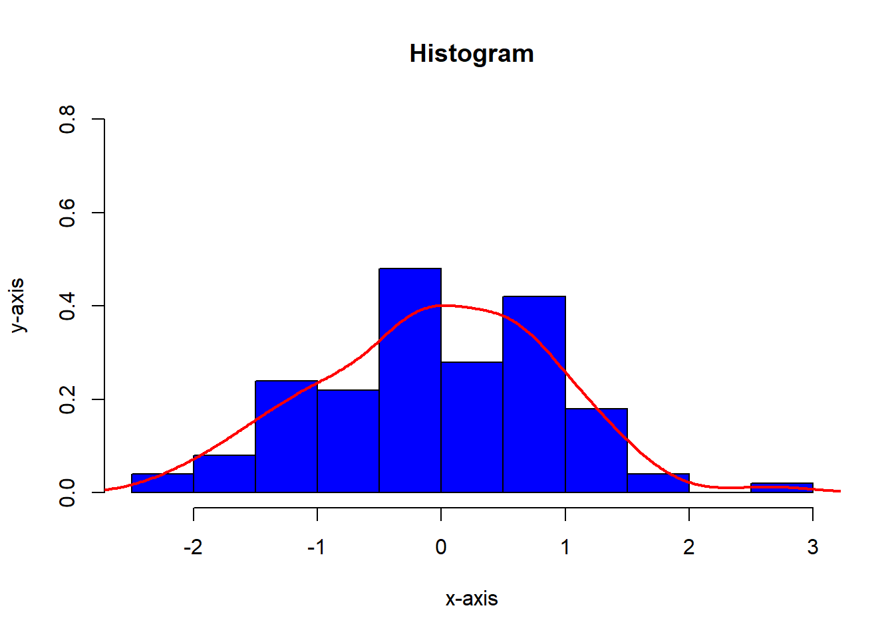

Data Visualizations
Plot of my country
Some time ago, I was interested in maps using R. I found some information with some libraries that can be used. The idea is to understand that we need to plot coordinates in a plot. In this small example I plot the map of Ecuador
library(maptools)
library(RColorBrewer)
my.palette1 <- brewer.pal(n = 12, name = "Set3")
crswgs84=CRS("+proj=longlat +ellps=WGS84 +datum=WGS84 +no_defs")
provincias<-readShapePoly("C:/Users/lenovo/Desktop/Msc.Statistics/Blog/sanmath.github.io/SHP/nxprovincias.shp")
plot(provincias,col=my.palette1,main="Ecuador")
grid()
Swiss Temperature in the Summer
Is the summer in Switzerland, we can see the temperature in the most important cities. Finally , we can include the information and show it in a map.
library(weatherData)
library(sp)
library(maptools)
library(RColorBrewer)
crswgs84=CRS("+proj=longlat +ellps=WGS84 +datum=WGS84 +no_defs")
cantones<-readShapePoly("C:/Users/lenovo/Desktop/Msc.Statistics/Blog/sanmath.github.io/SHP/CHE_adm1.shp")
mycols <- colors()[round(runif(25,100,130))]
mycols<-heat.colors(25)
mycols[c(6,8,25)]<-"tomato4"
plot(cantones,col=mycols,main="Switzerland Temperature in the Summer")
grid()
zh<-getCurrentTemperature("LSZH")[,c(2)]
br<-getCurrentTemperature("LSZB")[,c(2)]
gnv<-getCurrentTemperature("LSGG")[,c(2)]
text(coordinates(cantones)[c(6,8,25),],
labels = c(paste("Bern",br,"°"),
paste("Geneva",gnv,"°"),
paste("Zúrich",zh,"°")),cex = 0.8)
Population Pyramids
library(foreign)
library(readxl)
library(pyramid)
a<-read_excel(path ="proyecciones_poblacion.xlsx",sheet = 1 )
menor_de_20<-vector(mode ="numeric",length=17)
entre_20_39_<-vector(mode ="numeric",length=17)
entre_40_59_<-vector(mode ="numeric",length=17)
mayor_60<-vector(mode ="numeric",length=17)
for(i in c(2:22)){
menor_de_20[i-1]<-sum(as.numeric(a[1:4,i]))
entre_20_39_[i-1]<-sum(as.numeric(a[5:8,i]))
entre_40_59_[i-1]<-sum(as.numeric(a[9:12,i]))
mayor_60[i-1]<-sum(as.numeric(a[13:17,i]))
}
matriz<-matrix(cbind(menor_de_20,entre_20_39_,entre_40_59_,mayor_60),nrow = 21)
hombres<-read.csv("hombres.csv",header=TRUE,sep=";")
mujeres<-read.csv("mujeres.csv",header=TRUE,sep=";")
agelabels<-c("0-4","5-9","10-14","15-19","20-24","25-29","30-34",
"35-39","40-44","45-49","50-54","55-59","60-64","65-69","70-74",
"75-79",">80")
anios<-seq(1950,2050,5)
par(mfrow=c(1,3))
i<-2
pyramid(data.frame(100*hombres[,i]/sum(hombres[,i]), 100*mujeres[,i]/sum(mujeres[,i]),agelabels),main = substr(names(hombres)[i],2,5),Llab = "Hombres",Rlab = "Mujeres",Clab = "Edad",Cgap = 0.4,Lcol = "blue",Rcol="red", Csize=1,Laxis=seq(0,18,len=3),Raxis=seq(0,18,len=3),GL=TRUE,cex.main=1.4)
i<-12
pyramid(data.frame(100*hombres[,i]/sum(hombres[,i]), 100*mujeres[,i]/sum(mujeres[,i]),agelabels),main = substr(names(hombres)[i],2,5),Llab = "Hombres",Rlab = "Mujeres",Clab = "Edad",Cgap = 0.4,Lcol = "blue",Rcol="red", Csize=1,Laxis=seq(0,18,len=3),Raxis=seq(0,18,len=3),GL=TRUE,cex.main=1.4)
i<-22
pyramid(data.frame(100*hombres[,i]/sum(hombres[,i]), 100*mujeres[,i]/sum(mujeres[,i]),agelabels),main = substr(names(hombres)[i],2,5),Llab = "Hombres",Rlab = "Mujeres",Clab = "Edad",Cgap = 0.4,Lcol = "blue",Rcol="red", Csize=1,Laxis=seq(0,18,len=3),Raxis=seq(0,18,len=3),GL=TRUE,cex.main=1.4)